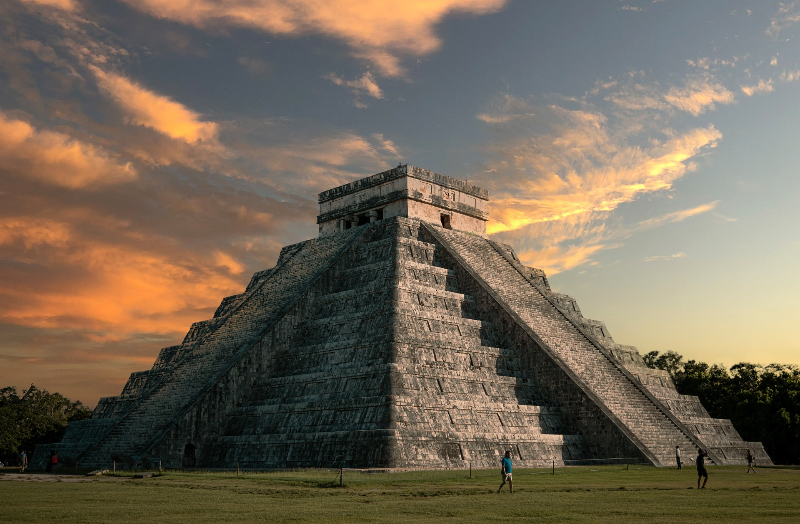
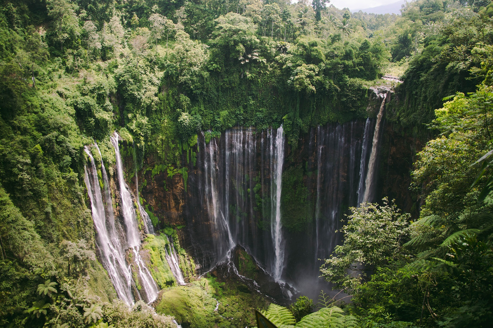

Explore, Travel,
EXPERIENCE






Xplr" is a dynamic and inspiring travel blog designed to ignite your wanderlust and guide your adventures. With captivating narratives, stunning visuals, and practical travel tips, "Xplr" takes you on a journey across the globe, uncovering hidden gems and iconic destinations alike. Whether you're a seasoned traveler or planning your first trip, this blog offers unique insights, from cultural experiences to must-try cuisines. "Xplr" combines personal storytelling with useful itineraries, empowering readers to explore the world confidently. Emphasizing sustainability and authentic connections, "Xplr" inspires a deeper appreciation for the diverse beauty and stories our planet has to offer.
Learn More


"Iceland was a dream come true. From soaking in the Blue Lagoon to hiking on glaciers, every moment felt magical. The northern lights were breathtaking, dancing across the sky like a masterpiece. Xplr’s tips on offbeat spots led me to hidden waterfalls I’d never have found on my own!"
-Anna's Adventure in Iceland
"Thailand was an explosion of flavors! Xplr’s recommendations guided me to the best street food in Bangkok—pad Thai and mango sticky rice were unforgettable. Exploring floating markets and cooking with locals made my trip extra special. I left with a full heart and a craving for more!"
-Raj’s Culinary Journey in Thailand
"Italy stole my heart! Xplr’s guide to Tuscany led me to rolling vineyards and charming villages. Strolling through Florence, savoring gelato, and discovering art felt like stepping into a storybook. The blog’s detailed itineraries made navigating the country a breeze. It was an adventure I’ll cherish forever!"
-Sophia’s Serenade in Italy